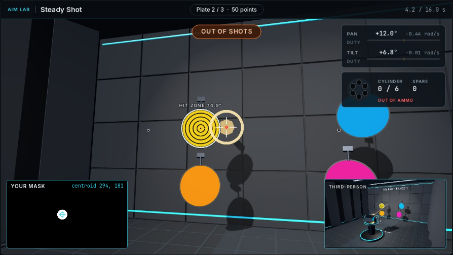

01
01CONTROL
Motor Lab↗
See how commands become motion. Compare positioning, feedback, and tracking.
- Basic Drive
- Stop on Target
- Follow the Target
ME41006 / PERCEPTUAL ROBOTICS
From motor feedback to visual control.
Develop, run, and evaluate Python programs in a shared simulation workspace.
Campus network required for simulations
LEARNING LABS
Begin with motor control and image processing,
then combine them in Aim Lab.
01CONTROL
See how commands become motion. Compare positioning, feedback, and tracking.
 02
02PERCEPTION
Work from camera pixels to a mask, an object, and a geometric estimate.

03INTEGRATION
Connect perception and motion. Inspect alignment, target selection, and shot placement.
THE WORKSPACE GUIDE
A visual reference for running a lesson, reading its result, and keeping your code.
Using the labs → 123
123CLASS COMPETITION
One program. Five stages.
The workspace includes the five scenes, rules, API reference, and a blank Python template.